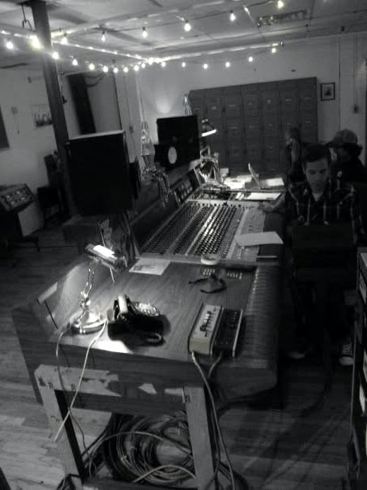
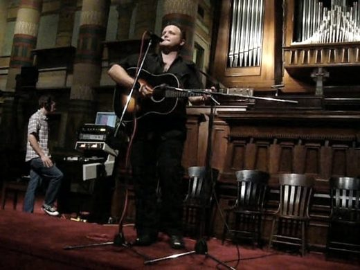
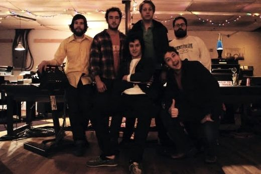

Where I learned to speak engineer, operations, and leadership.
Before tech I was a recording engineer, which turned out to be the same discipline I practice now: keeping critical systems running for the people who depend on them. Earlier still, I studied history at the University of Oregon, a training in how to think: absorb large amounts of information, figure out what actually matters, and make a defensible argument on paper. Then I studied audio engineering at the Conservatory of Recording Arts and Sciences, and moved to Nashville for a six-month internship at Welcome to 1979, a studio built around vintage analog gear.
I stayed on as Chris Mara's assistant and house assistant, learning to repair and calibrate American-made MCI consoles and tape machines: schematics, signal flow, soldering, calibration, and the patience that comes with an old machine that will only behave if you treat it with respect. Working with Jeremy Ferguson and Turbo Fruits on Echo Kid was one of my favorite stretches there, a month-long project where it felt like we lived in the studio. Probably because I did. From there I moved to a steady gig as chief audio engineer at Quaver Music, a startup building a digital music curriculum, where I built the network storage and pioneered the on-set and live-audio workflows. I still found time for fun projects, like mixing The Protomen's live Queen cover album, A Night of Queen, at Welcome to 1979. A family relocation brought me to Seattle, and after a year running live sound at El Corazon, I stopped building the infrastructure that powers other people's art and started running the technology itself.


